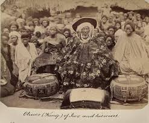
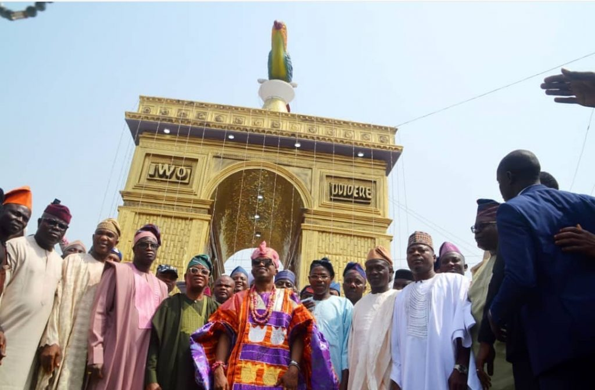

HISTORY OF IWO LAND
Iwo is a City in Osun State, Nigeria that is the seat of the Iwo Kingdom, a traditional state. The Iwo people, like all other people of Yoruba stock are said to have belonged to Ile-Ife from where they migrated sometimes in the 11th century. The only predicted land with the symbol of the parrots to locate where the promised land will be found which happens to be the present Iwoland. The City formerly part of old Oyo state was later separated and became one of the major townships in Osun State, Nigeria.
 It has over 30 ancient and powerful Kings all under the Oluwo of Iwoland as the only Consenting Authority and first-class paramount Ruler in an area of 245 km² and a population of 191,348 (central city/Local Government) most populous Local Government in Osun State by the 2006 Nigeria National census figures.
It has over 30 ancient and powerful Kings all under the Oluwo of Iwoland as the only Consenting Authority and first-class paramount Ruler in an area of 245 km² and a population of 191,348 (central city/Local Government) most populous Local Government in Osun State by the 2006 Nigeria National census figures.
The other local governments in Iwo from satellite towns are Aiyedire Local Government, 265.783 km² area and 76,309 by population, as well as Ola-Oluwa Local Government, 332.117 km² area and 76,227 by population. The Headquarters of the Local Governments are Iwo (Central), Iwo; Aiyedire, Ile Ogbo; and Ola-Oluwa, Bode-Osi. The postal code of the area is 232.
The other local governments in Iwo from satellite towns are Aiyedire Local Government, 265.783 km² area and 76,309 by population, as well as Ola-Oluwa Local Government, 332.117 km² area and 76,227 by population. The Headquarters of the Local Governments are Iwo (Central), Iwo; Aiyedire, Ile Ogbo; and Ola-Oluwa, Bode-Osi. The postal code of the area is 232.
PEOPLE OF IWOLAND
The people are primarily of Yoruba descent and were of African Traditional Religion until Islamic missionaries came and converted many to Islam. The Christian missionaries soon followed and with evangelism, both direct and through established secular schools converted many to Christianity.



Iwo people are, presently, a mixture of the three religions, with a higher population of Muslims than Christians, and still fewer traditionalists. Everyone living happily and harmoniously with one another, and usually joining the other in celebration of major religious festivities as every extended family has members in each religion.



Immigrants of different tribes who are employed and engaged in different trades also live amicably with one another with the locals.